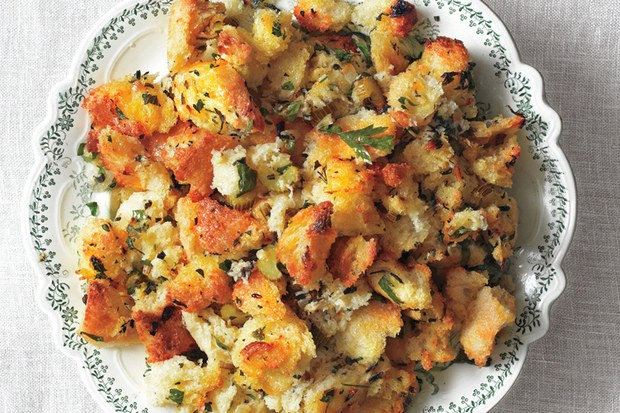
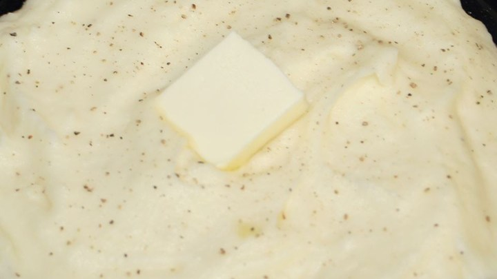

Perfect Pumpkin Pie
- cook time: 55 min
- prep time: 15 min
- servings: 8
- 1 can pumpkin
- 1 can Sweetened Condensed Milk
- 2 large eggs
- 1 teaspoon ground cinnamon
- 1/2 teaspoon ground ginger
- 1/2 teaspoon ground nutmeg
- 1/2 teaspoon salt
- 1 unbaked pie crust
View on allrecipes

"Simple Is Best" Dressing
- cook time: 80 min
- prep time: 45 min
- servings: 8-10
- 3/4 cup unsalted butter
- 1 pound white bread
- 2 1/2 cups chopped yellow onions
- 1 1/2 cups celery slices
- 2 tablespoons chopped fresh sage
- 1 tablespoon chopped fresh rosemary
- 1 tablespoon chopped fresh thyme
- 2 teaspoons kosher salt
- 1 teaspoon freshly ground black pepper
- 2 1/2 cups low-sodium chicken broth
- 2 large eggs
View on epicurious

Basic Mashed Potatoes
- cook time: 20 min
- prep time: 15 min
- servings: 4
- 2 pounds baking potatoes
- 2 tablespoons butter
- 1 cup milk
- salt and pepper to taste
View on allrecipes